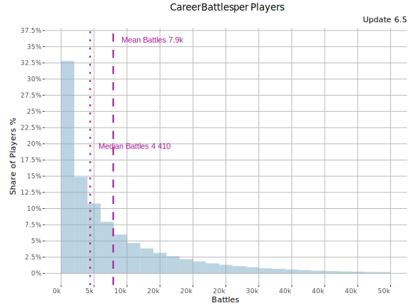
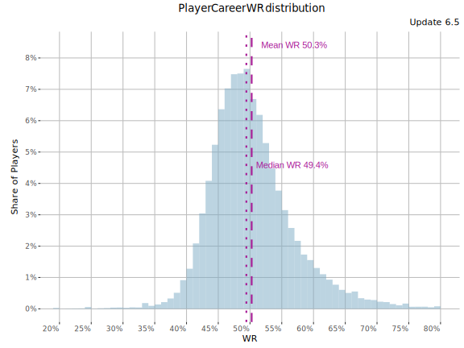
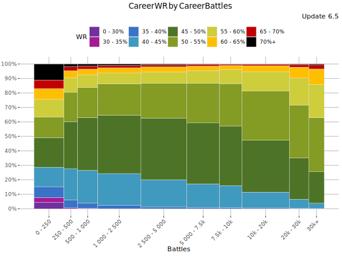
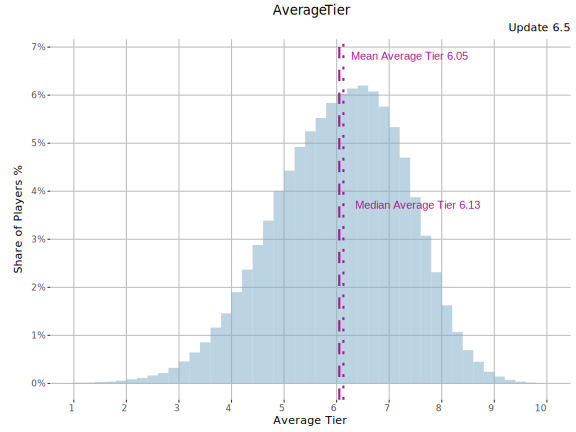
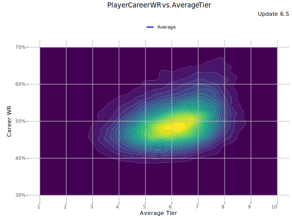
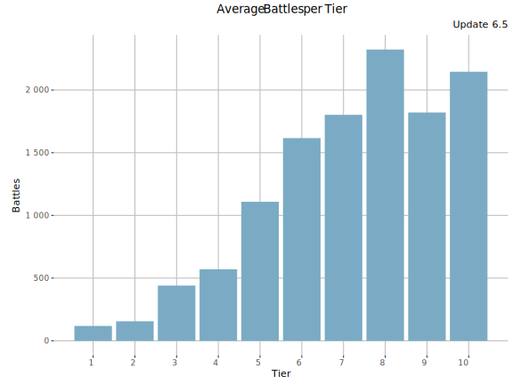
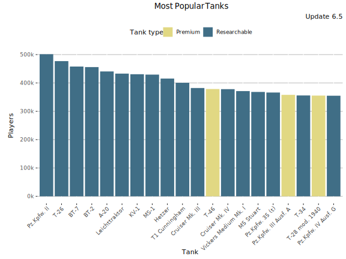
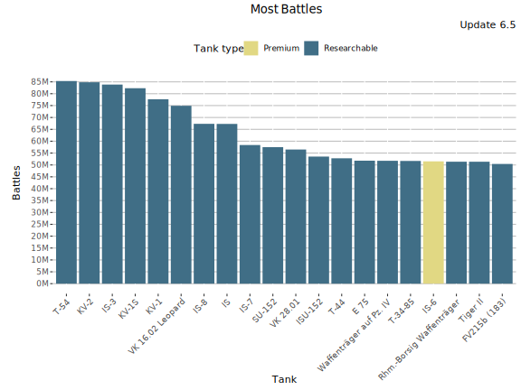
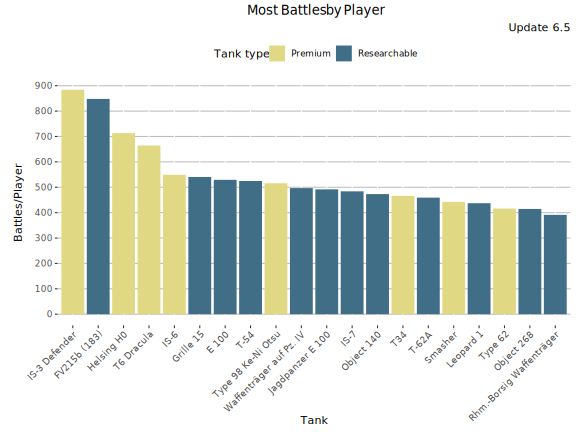

Career stats
This page shows statistics of players' battles fought during their Blitz “career” until the end of update 6.5.
Battles per Player
Number of career/cumulative battles per player in the end of the update 6.5.

An average player has played 10641 battles by the end of update 6.5. Median battle count was 6315 and the largest number of battles recorded by a single player (in the dataset) was 174k battles. The following tables shows battle counts by N% most inactive players during the update (i.e. “90% most inactive” == “10% most active”).
Battles per Player table
Show table
The table below shows the (max) number of battles played until the end of 6.5 by the X% most inactive players. Reading tip: 10% most active players have played more than the 90% most inactive players.
| % of Players |
Battles |
| 0% |
1 |
| 5% |
168 |
| 10% |
484 |
| 15% |
942 |
| 20% |
1 496 |
| 25% |
2 098 |
| 30% |
2 778 |
| 35% |
3 544 |
| 40% |
4 399 |
| 45% |
5 324 |
| 50% |
6 315 |
| 55% |
7 504 |
| 60% |
8 897 |
| 65% |
10 557 |
| 70% |
12 507 |
| 75% |
14 845 |
| 80% |
17 722 |
| 85% |
21 451 |
| 90% |
26 740 |
| 95% |
35 604 |
| 100% |
174 439 |
Player WR distribution
The following graph shows a histogram of players (y-axis) with certain career WR (x-axis).

Show table
| Career WR |
Share % |
Cumulative share % |
| 20% |
0% |
0% |
| 21% |
0% |
0% |
| 22% |
0% |
0% |
| 23% |
0% |
0% |
| 24% |
0% |
0% |
| 25% |
0% |
0% |
| 26% |
0% |
0% |
| 27% |
0% |
0% |
| 28% |
0% |
0% |
| 29% |
0% |
0% |
| 30% |
0% |
0.01% |
| 31% |
0% |
0.01% |
| 32% |
0% |
0.01% |
| 33% |
0% |
0.01% |
| 34% |
0.01% |
0.02% |
| 35% |
0.01% |
0.03% |
| 36% |
0.02% |
0.05% |
| 37% |
0.04% |
0.09% |
| 38% |
0.1% |
0.19% |
| 39% |
0.22% |
0.41% |
| 40% |
0.45% |
0.87% |
| 41% |
0.85% |
1.72% |
| 42% |
1.43% |
3.15% |
| 43% |
2.27% |
5.42% |
| 44% |
3.26% |
8.68% |
| 45% |
4.4% |
13.1% |
| 46% |
5.71% |
18.8% |
| 47% |
6.55% |
25.3% |
| 48% |
7.29% |
32.6% |
| 49% |
7.73% |
40.4% |
| 50% |
7.78% |
48.1% |
| 51% |
7.82% |
56% |
| 52% |
7.32% |
63.3% |
| 53% |
6.38% |
69.6% |
| 54% |
5.46% |
75.1% |
| 55% |
4.69% |
79.8% |
| 56% |
3.95% |
83.7% |
| 57% |
3.14% |
86.9% |
| 58% |
2.58% |
89.5% |
| 59% |
2.02% |
91.5% |
| 60% |
1.65% |
93.1% |
| 61% |
1.54% |
94.7% |
| 62% |
1.25% |
95.9% |
| 63% |
0.95% |
96.9% |
| 64% |
0.74% |
97.6% |
| 65% |
0.56% |
98.2% |
| 66% |
0.43% |
98.6% |
| 67% |
0.34% |
98.9% |
| 68% |
0.27% |
99.2% |
| 69% |
0.2% |
99.4% |
| 70% |
0.16% |
99.6% |
| 71% |
0.15% |
99.7% |
| 72% |
0.1% |
99.8% |
| 73% |
0.06% |
99.9% |
| 74% |
0.04% |
99.9% |
| 75% |
0.03% |
99.9% |
| 76% |
0.02% |
100% |
| 77% |
0.01% |
100% |
| 78% |
0.01% |
100% |
| 79% |
0.01% |
100% |
| 80% |
0% |
100% |
Current WR vs. Career Battles played
This graph shows Player WR during the update 6.5 vs. player career battles. Average tier is not taken into account.

Career WR vs. Career Battles played
This graph shows Player career WR vs. career battles. Average tier is not taken into account.

Average Tier
The following graph shows a histogram of share of players (y-axis) average tier (x-axis). Only players with more than 500 battles during their Blitz “career” are included.

WR vs. Average Tier
This graph shows player Career WR vs. average tier until the end of update 6.5. Minimum 500 battles required.

Battles per Tier
This graph shows average number of career battles per tier.

Most popular Tanks by Players
This graph shows the tanks with the most players. This counts all the battles played until the end of the update. More Tank Statistics here.

Most popular Tanks - Table
Show table
| Tank |
Players |
Average WR |
Battles/Player |
Tank type |
| Pz.Kpfw. II |
308 556 |
56.4% |
36 |
Researchable |
| BT-7 |
292 409 |
50.4% |
40 |
Researchable |
| T-26 |
290 671 |
51.4% |
17 |
Researchable |
| A-20 |
286 357 |
51.7% |
80 |
Researchable |
| BT-2 |
285 180 |
54% |
23 |
Researchable |
| KV-1 |
279 616 |
53.5% |
193 |
Researchable |
| Hetzer |
268 141 |
53.3% |
99 |
Researchable |
| Leichttraktor |
252 000 |
52.2% |
19 |
Researchable |
| MS-1 |
250 417 |
56.5% |
22 |
Researchable |
| M5 Stuart |
246 913 |
52.1% |
42 |
Researchable |
| Cruiser Mk. IV |
245 483 |
58.2% |
66 |
Researchable |
| Cruiser Mk. III |
241 849 |
56.1% |
27 |
Researchable |
| Pz.Kpfw. IV Ausf. G |
239 582 |
49.5% |
117 |
Researchable |
| Pz.Kpfw. III Ausf. A |
237 922 |
51.6% |
46 |
Premium |
| T-34 |
236 138 |
51.4% |
127 |
Researchable |
| VK 16.02 Leopard |
235 537 |
52.2% |
235 |
Researchable |
| Pz.Kpfw. III |
235 531 |
53.1% |
55 |
Researchable |
| Pz.Kpfw. 35 (t) |
234 759 |
53.3% |
17 |
Researchable |
| T1 Cunningham |
233 999 |
55% |
22 |
Researchable |
| D2 |
233 106 |
53.7% |
19 |
Researchable |
Most played Tanks
This graph shows the most played tanks by their owners during their career. More Tank Statistics here.

Most played Tanks - Table
Show table
| Tank |
Battles |
Average WR |
Players |
Battles/Player |
Tank type |
| KV-2 |
64M |
53.1% |
177 852 |
359 |
Researchable |
| T-54 |
63M |
51.4% |
119 231 |
532 |
Researchable |
| IS-3 |
61M |
50.6% |
169 302 |
359 |
Researchable |
| KV-1S |
58M |
51.7% |
227 244 |
254 |
Researchable |
| VK 16.02 Leopard |
55M |
52.2% |
235 537 |
235 |
Researchable |
| KV-1 |
54M |
53.5% |
279 616 |
193 |
Researchable |
| IS-8 |
49M |
49.3% |
128 087 |
385 |
Researchable |
| IS |
47M |
50.3% |
200 878 |
234 |
Researchable |
| IS-7 |
45M |
50.4% |
91 484 |
496 |
Researchable |
| SU-152 |
43M |
52% |
143 148 |
300 |
Researchable |
| Waffenträger auf Pz. IV |
42M |
51.3% |
81 067 |
518 |
Researchable |
| VK 28.01 |
42M |
53% |
171 490 |
243 |
Researchable |
| ISU-152 |
41M |
49.6% |
114 333 |
356 |
Researchable |
| FV215b (183) |
41M |
49.4% |
47 284 |
858 |
Researchable |
| Rhm.-Borsig Waffenträger |
40M |
50.4% |
100 427 |
400 |
Researchable |
| IS-6 |
39M |
54.8% |
68 425 |
576 |
Premium |
| E 75 |
39M |
50.4% |
102 734 |
378 |
Researchable |
| E 100 |
38M |
50.8% |
70 040 |
542 |
Researchable |
| T-44 |
38M |
50.5% |
113 493 |
333 |
Researchable |
| Tiger II |
37M |
48.3% |
142 241 |
264 |
Researchable |
Most Battles by Player
This graph shows the most played tanks by their owners during their career (=battles/players). More Tank Statistics here.

Most Played Tanks - Table
Show table
| Tank |
Battles/Player |
Average WR |
Players |
Tank type |
| IS-3 Defender |
921 |
58.3% |
22 503 |
Premium |
| FV215b (183) |
858 |
49.4% |
47 284 |
Researchable |
| Helsing H0 |
746 |
57.9% |
25 924 |
Premium |
| T6 Dracula |
691 |
60.1% |
25 594 |
Premium |
| Type 98 Ke-Ni Otsu |
586 |
71% |
2 039 |
Premium |
| IS-6 |
576 |
54.8% |
68 425 |
Premium |
| Grille 15 |
548 |
49.5% |
55 943 |
Researchable |
| E 100 |
542 |
50.8% |
70 040 |
Researchable |
| T-54 |
532 |
51.4% |
119 231 |
Researchable |
| Waffenträger auf Pz. IV |
518 |
51.3% |
81 067 |
Researchable |
| IS-7 |
496 |
50.4% |
91 484 |
Researchable |
| Jagdpanzer E 100 |
494 |
50% |
44 588 |
Researchable |
| T34 |
483 |
53.2% |
44 238 |
Premium |
| Object 140 |
480 |
52.3% |
52 021 |
Researchable |
| Smasher |
479 |
59.5% |
6 907 |
Premium |
| T-62A |
463 |
49.9% |
66 096 |
Researchable |
| Leopard 1 |
443 |
50% |
48 330 |
Researchable |
| Object 268 |
420 |
50.4% |
48 189 |
Researchable |
| Type 62 |
409 |
58.1% |
34 288 |
Premium |
| Rhm.-Borsig Waffenträger |
400 |
50.4% |
100 427 |
Researchable |